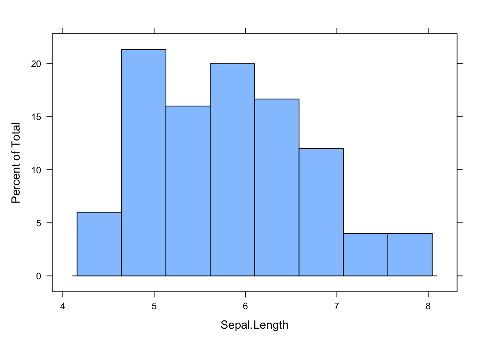
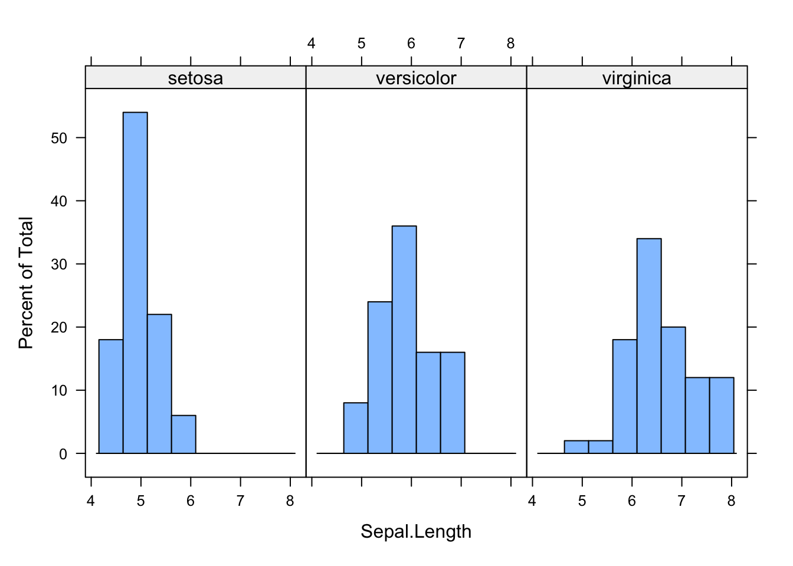
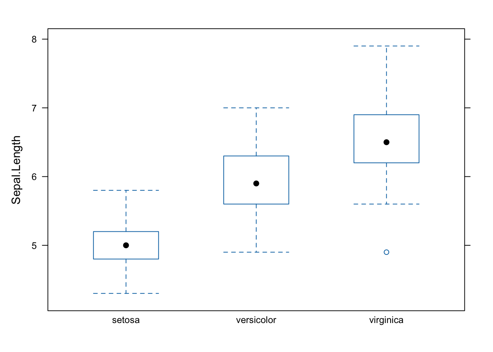

library(lattice)
histogram(~Sepal.Length, iris)
Imagine you’re standing in a bustling cafe, sipping your coffee while observing the scene around you. Customers come and go, some ordering their usual drinks, others trying something new. The number of people who walk in during an hour, the time each spends waiting in line, even the total sales for the day—these are all examples of things we can measure, and all are influenced by uncertainty. We understand these seemingly unpredictable happenings through random variables and their distributions.
A random variable is a mathematical abstraction that provides a bridge between theoretical probability and real-world data. Every dataset you encounter—whether it’s student grades, daily temperatures, or stock market prices—can be viewed as observations from random variables.
The fact is, we describe something as a random variable not because they are random in nature (like rolling a die), but it is the problem posed does not allow a definite answer (the question itself involves likelihood) or we do not have enough information to give an answer with certainty. In such cases, we would like to give the possible values with their chances of being (the idea of distribution).
Despite the outcome of any one event being uncertain, we can use patterns from past observations to predict the general behavior of these variables. By collecting data, we can figure out how often certain outcomes happen and connect them to theoretical models called distributions.
For instance, if you track the heights of 100 people, you might notice that most are close to the average, with fewer at the extremes. This “bell-shaped curve” is the hallmark of something called the normal distribution, one of the most common patterns in nature. Heights, test scores, and even measurement errors tend to follow this distribution.
But not all data fits the same shape. If you’re counting the number of cars passing through an intersection in a given hour, you might find the Poisson distribution is a better fit. This pattern shows up whenever you’re dealing with counts of events over time or space—like customer arrivals at a store or typos in a book.
\[\begin{array}{ccccccc} \textrm{Question with} & \rightarrow & \textrm{Data Collection} & \rightarrow & \textrm{Patterns}\\ \textrm{uncertainty} & & \downarrow & & \downarrow\\ & & \textrm{Random Variables} & \rightarrow & \textrm{Distributions} & \rightarrow & \textrm{Predictions} \end{array}\]
By linking real-world data to these theoretical models, random variables let us make predictions. How many customers will show up next week? What’s the chance of a traffic jam during rush hour? Random variables give us the tools to answer these questions with confidence.
Viewing the world through the lens of random variables has several benefits: (1) It helps us deal with uncertainty. Random variables give us a framework to understand situations where outcomes aren’t guaranteed. For example, a meteorologist uses random variables to estimate the chance of rain, so you know whether to carry an umbrella. (2) It connects theory to reality. By analyzing data, we can identify which theoretical models describe the randomness we observe. This helps businesses, scientists, and policymakers make better decisions. (3) It allows for better planning.
Suppose you’re running an online store. Knowing that the number of daily orders follows a certain distribution can help you manage inventory and staffing. Suppose you’re tracking the number of customers visiting your cafe each day. You notice the number fluctuates between 50 and 100, with an average of 75. By treating this as a random variable, you can estimate the likelihood of having fewer than 60 customers tomorrow (useful for planning staff schedules); or the probability of exceeding 90 customers on a holiday (important for stocking supplies).
In the grand scheme of things, random variables are more than just mathematical tools—they’re a way to make sense of life’s unpredictability. So, the next time you see data—whether it’s sports stats, sales figures, or even your social media likes—remember: Behind the numbers is a pattern of randomness waiting to be understood. And with random variables, you have the key to unlock it.
We view every variable in a dataset as random variables. The values we see in the dataset are considered as samples of the random variables whose entire distribution is unknown.
One way to visualize the distribution of a variable is to plot a histogram. A histogram groups data points into intervals, showing how often data values fall within each range. The horizontal axis represents the intervals (or bins), and the vertical axis shows the frequency or count of data points in each bin. Histograms provide insights into the shape of the data distribution, revealing patterns such as skewness, symmetry, and the presence of outliers, making them a fundamental tool in exploratory data analysis.
library(lattice)
histogram(~Sepal.Length, iris)
To explore conditional probability, we may plot the histogram conditioned on other variables.
histogram(~Sepal.Length|Species, iris)
A more parsimonious way to visualize the distribution is to use a boxplot. A boxplot, also known as a box-and-whisker plot, is a visual summary of a dataset that highlights its central tendency, spread, and potential outliers. It displays the median, quartiles, and range of the data. The box represents the interquartile range (IQR), which contains the middle 50% of the data, with the lower and upper edges corresponding to the first (Q1) and third quartiles (Q3). The line inside the box marks the median. Whiskers extend from the box to indicate the range of values within 1.5 times the IQR from Q1 and Q3, while points beyond this range are considered outliers. Boxplots are useful for comparing distributions across different groups and identifying data asymmetry or variability.
bwplot(Sepal.Length~Species, iris)